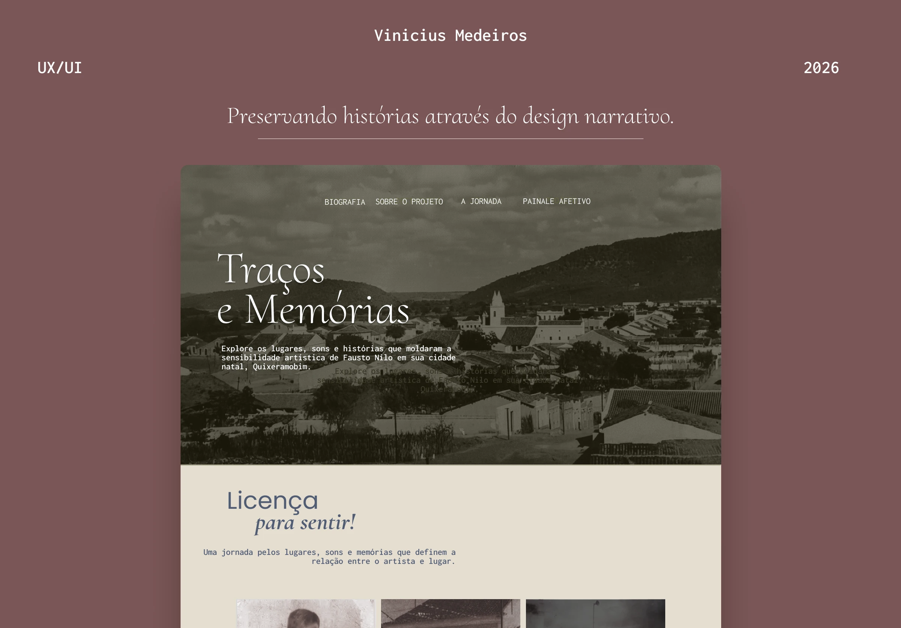
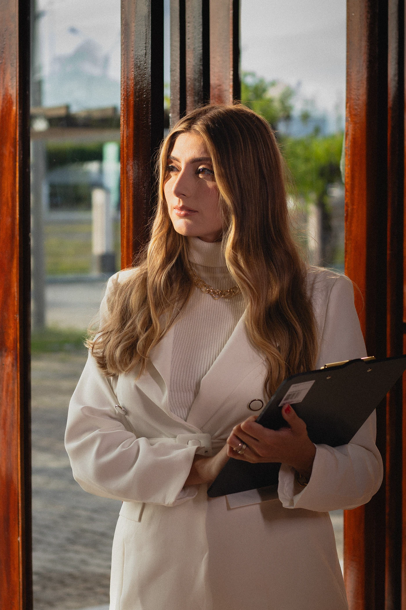

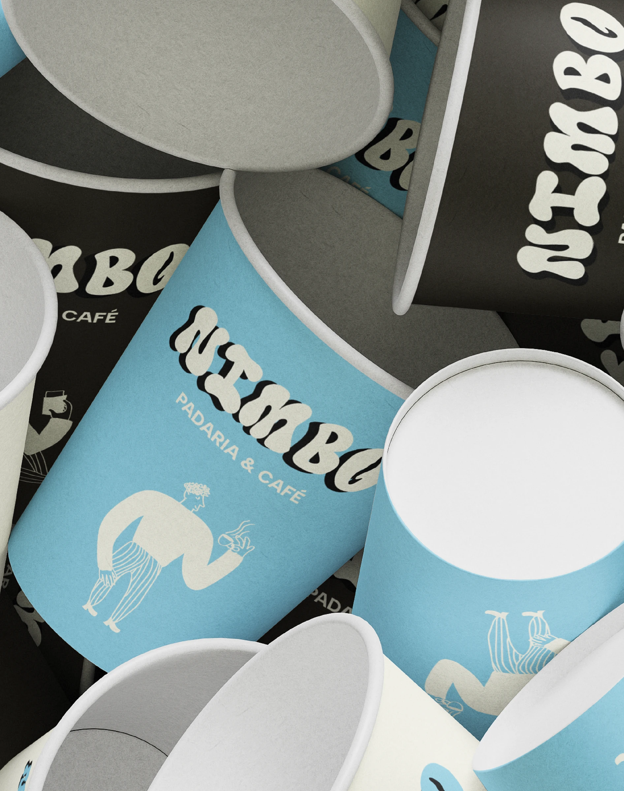
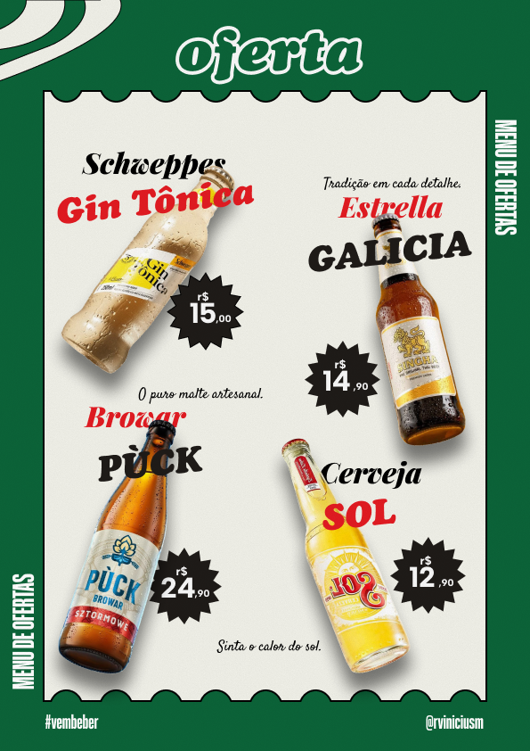




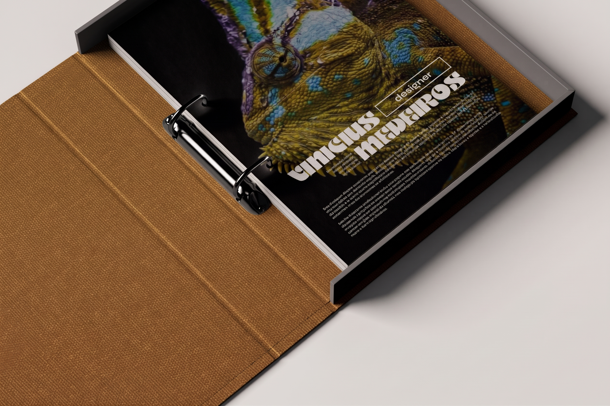
Design com contexto e intenção. Marcas que se destacam, telas que guiam e feeds que convertem.
Passa o mouse em cada serviço pra ver o trabalho. Clica pra ir direto pra ele.Toca em cada serviço pra ir direto pra ele.
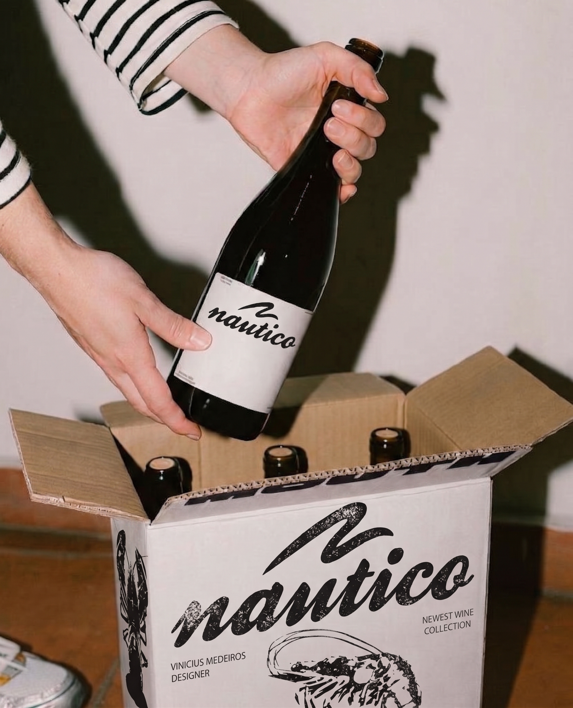

Penso nela como algo que aprende e evolui. Ao construir uma marca, crio os alicerces: a estratégia, o símbolo, o logotipo, a tipografia e a paleta de cores. É o caso do Náutico Restaurante e da Nimbo Bakery, duas identidades completas, do conceito à aplicação.
A experiência é tudo o que acontece entre o usuário e a sua marca: cada tela, cada toque, cada decisão. Cada ponto de contato, um post, uma tela, uma conversa é a sua marca falando com alguém. Quando todos eles falam a mesma língua, cada interação é... autêntica.
01 / Brand Identity & Web
Identidade visual marcante e desenvolvimento web para restaurante de alta gastronomia.
 02 / UI/UX & Narrative
02 / UI/UX & Narrative
Narrativas visuais imersivas preservando a cultura local com tipografia expressiva.
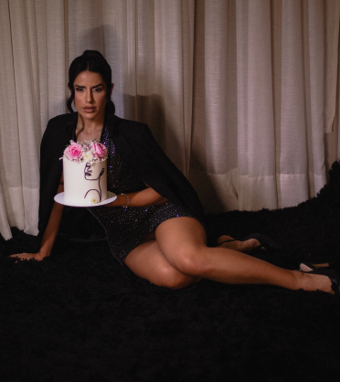
03 / Web DesignLayout elegante e minimalista projetado para destacar acervo fotográfico.
04 / Mobile App UI
Interface mobile focada em acompanhamento de treino e métricas de performance.
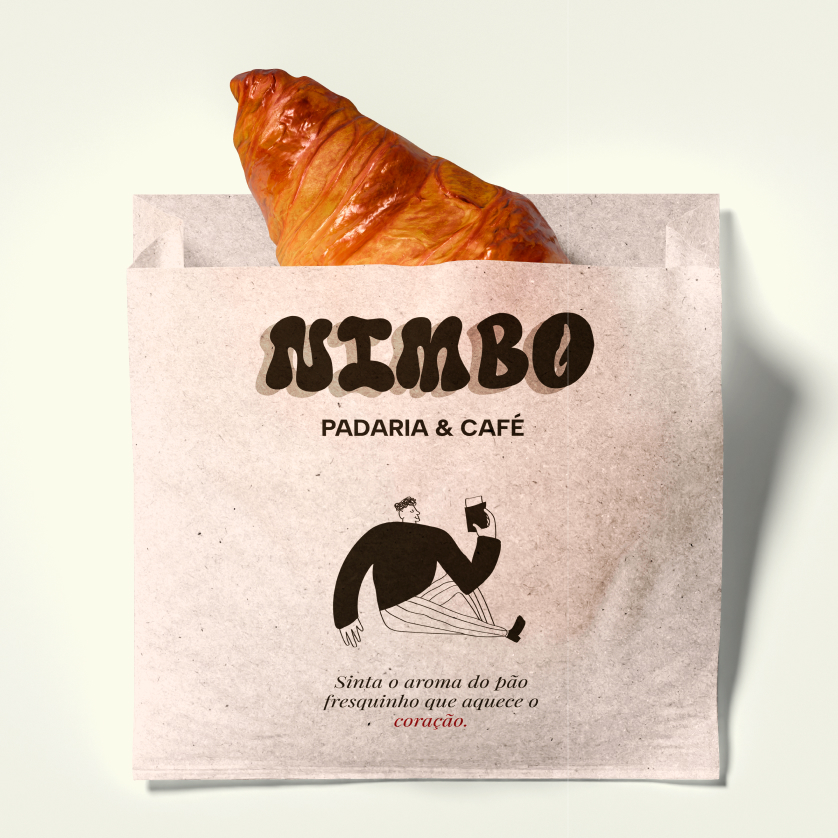
05 / Brand IdentityIdentidade de marca contemporânea unindo o artesanal ao universo digital.
Background Profissional
Bacharelado em Design Digital pela Universidade Federal do Ceará, concluído em 2026. TCC: Traços e Memórias, um mapa afetivo interativo que preserva a cultura local.
Designer Digital e Social Media na JIT Technology, de janeiro a dezembro de 2025. Interfaces, prototipagem e materiais para a OK Intercâmbio, além de e-books e peças para social media.
Designer Digital com foco em UX/UI na Casa de Saberes Cego Aderaldo, de março a junho de 2023, trabalhando em equipe multidisciplinar.
Designer Digital na Autarquia Municipal do Meio Ambiente (AMMA), de julho a dezembro de 2022. Branding institucional e peças para comunicação pública.
Cada pôster explora uma estética diferente, do comercial ao artístico, do editorial ao ilustrado.
09 peças
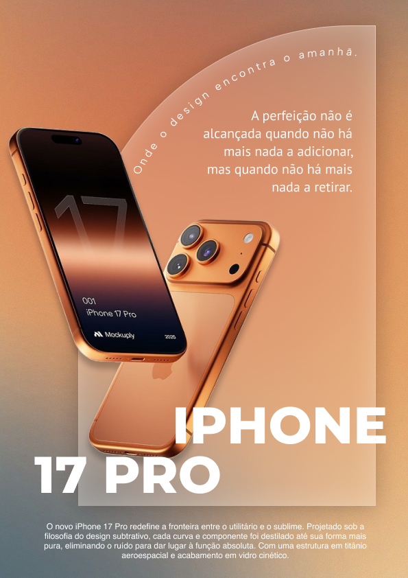
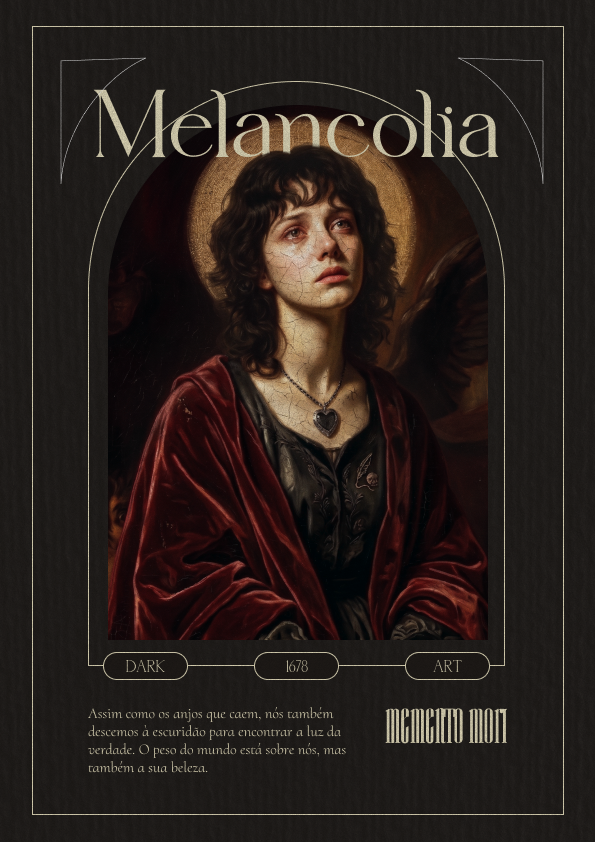
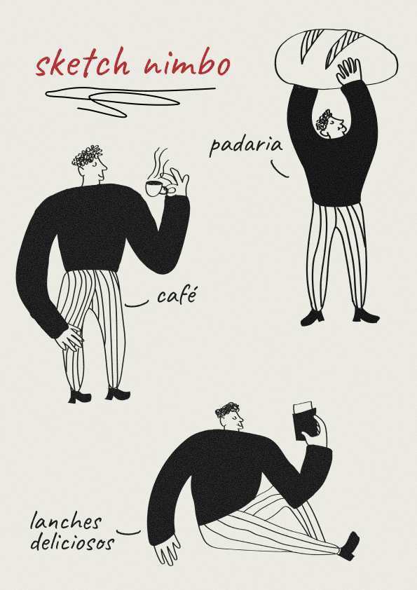
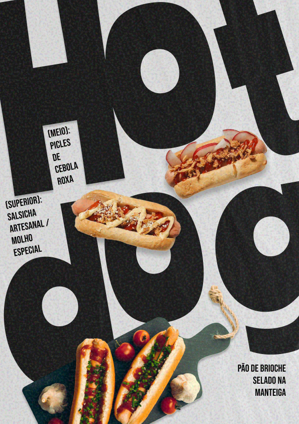
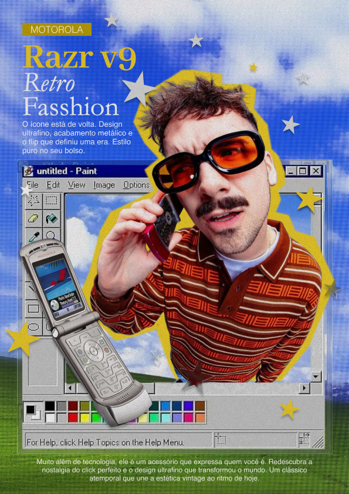
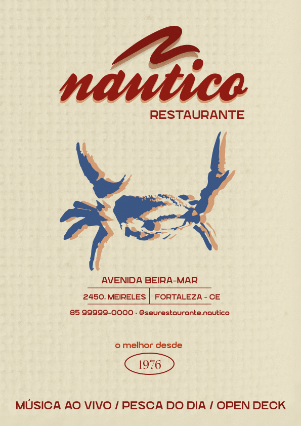
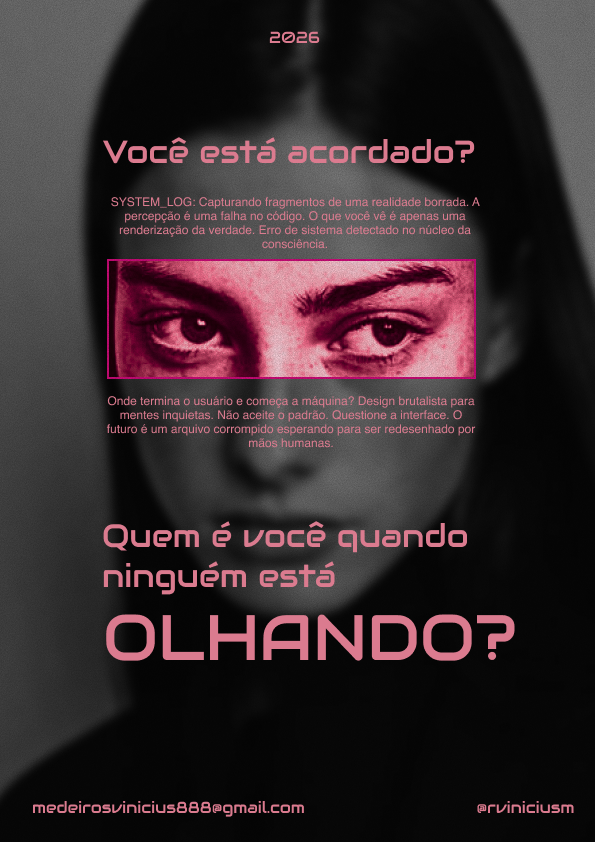
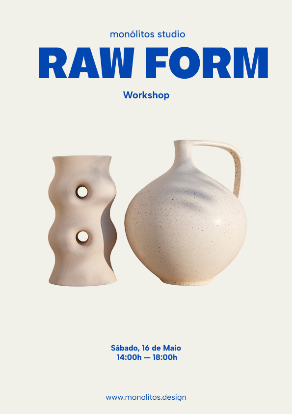
Sistemas de Produção
SUA MARCA VIVA NO FEED TODO DIA, VIRANDO POST EM CONVERSA E SEGUIDOR EM CLIENTE.
POV: o seu novo feed